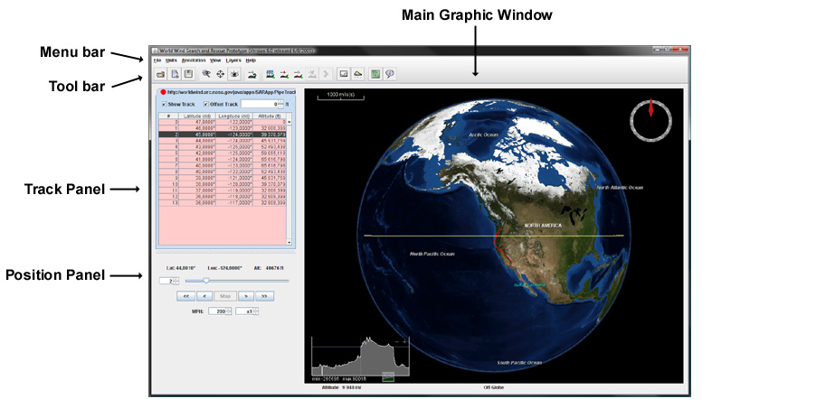
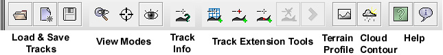
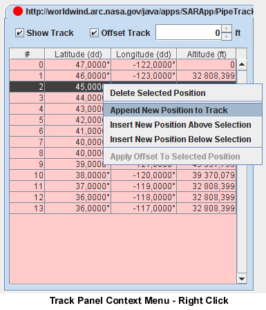
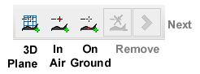
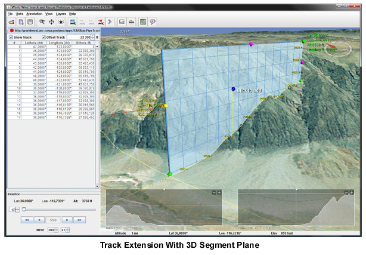
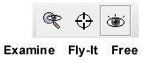
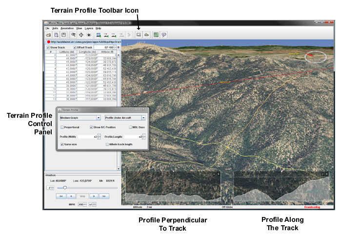
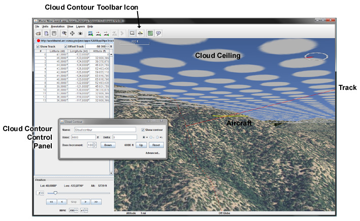

WorldWind Search and Rescue Instructions
Panels and Controls

There are three panels in the application:
- The main graphics window. See Viewing Controls below for interaction controls.
- The Tracks panel, listing the currently loaded tracks and the points of the current track. Any field of
the displayed track can be edited by double-clicking it and entering a new value. Positions can be added,
inserted or deleted via the context menu (right-click menu). New tracks can be added via the File menu in the
menu bar. An offset can be added to all positions via the Offset spinner at top right. An offset value can be
set explicitly by entering it in the field.
- The Position panel, for position control along the current track. This panel displays the current track
position and provides ways to move the position either directly or under timed control. The leftmost number box
and the slider adjacent to it indicate and control the current track position within a track segment. The box
identifies the first point of the segment. The slider indicates the relative distance between the two segment
points.
A menu bar and a tool bar located at the top of the window provide access to the application functions, tools
and options. See Menu bar description and Tool bar description below.
Menu bar description
From left to right:
File - provide options for managing tracks and downloading imagery and elevation data for a particular sector.
- New Track... - Create a new track - (Ctrl-N).
- Open Track File... - Open a track from a local file - (Ctrl-O).
- Open Track URL... - Open a track from a remote URL - (Ctrl-U).
- Close Track - Close the current track - (Ctrl-F4).
- Save Track - Save the current track - (Ctrl-S).
- Save Track As... - Save the current track in a different file or location - (Ctrl-Shift-S).
- Preferences... - Open the Preference window - track auto save...
- Bulk Download... - Open the Bulk Download window - (Ctrl-B).
- Exit - Quit the application - (Alt-F4).
Units - Meter vs Feet and Decimal Degrees vs DMS.
- Meters - Set the distance units to meter and kilometers - (Ctrl - M).
- Feet - Set the distance unit to feet and miles - (Alt - M).
- Angle DD - Set the angular display to decimal degrees - (Ctrl - D).
- Angle DMS - Set the angular display to degrees, minutes and seconds - (Alt - D).
Annotation - add or remove annotations. See Annotations
- New Annotation... - Add an annotation on the terrain - (Ctrl-A).
- Remove Annotation - Remove the currently selected annotation - (Ctrl-Shift-A).
- Show Annotations - Turn on and off annotation display - (Alt-A).
View - turn on and off display options. Terrain profile and cloud contour controls.
- Scalebar - Turn on and off the scalebar display.
- Aircraft Location - Turn on and off the aircraft location display.
- Crosshair - Turn on and off the crosshair display.
- Compass - Turn on and off the compass display.
- Terrain Profile... - Open the Terrain Profile control window. See Terrain Profile Modes - (Ctrl-T)
- Cloud Contour... - Open the Cloud Contour control window. See Cloud Contour - (Ctrl-C)
Layers - turn on and off imagery layers.
- NASA Blue Marble - The NASA Blue Marble Next Generation 250m Earth global imagery.
- I-Cubed Lansat - Landsat 7 Global 15m imagery
- MS Virtual Earth Aerial - Global Microsoft layerset with resolutions of 1m and less in some parts of the world.
- NAIP California - USDA NAIP 1m imagery for California
- USGS Digital Ortho - Black and white 1m imagery for continental US. This layer is applied with some tranparency.
- USGS Urban Area Ortho - Color 1m or less imagery for some US urban areas
- USGS Topographics Maps - US Topographic maps
Help.
- Help - Displays this documentation - (F1).
- About - Displays informations about this application.
Tool bar description

From left to right:
Track managment - See Track Management.
- Open Track File - Open a track from a local file - (Ctrl-O).
- New Track - Create a new track - (Ctrl-N).
- Save Track - Save the current track - (Ctrl-S).
View Modes - See View Modes.
Track Info - turns on and off current track segment information display.
Track extension - See Track Extension.
- Extension with segment plane.
- Extension in the air.
- Extension on the ground.
- Remove last track point.
- Move to next point.
Tools.
- Terrain Profile - Open the Terrain Profile control window. See Terrain Profile Modes - (Ctrl-T)
- Cloud Contour - Open the Cloud Contour control window. See Cloud Contour - (Ctrl-C)
Help.
Track Management
Loading and saving tracks
- To load a track from a local file either click on the 'folder' icon in the tool bar, or select
the File->Open track file... menu option, or use the keyboard shortcut Ctrl-O. Select the proper
file and click "Open".
- To load a track from a remote file either select the File->Open track URL... menu option, or use the
keyboard shortcut Ctrl-U. Enter the file URL and click "OK".
- To create a new track either click on the 'blank page' icon in the tool bar, or select the File->New Track...
menu option or use the keyboard shortcut Ctrl-N. Enter a track name and click "OK". To build the track path see
Managing track points below.
- To Save the current track either click on the 'floppy disk' icon in the tool bar, or select the
File->Save Track menu option or use the keyboard shortcut Ctrl-S. Note that tracks are automaticaly saved
every minutes - see File->Preferences...
- To save the current track in a different file or location, select the File->Save Track As... menu option or
use the keyboard shortcut Ctrl-Shift-S.
- To close the current track select the File->Close Track menu option or use the keyboard shortcut Ctrl-F4.
If the track as been edited since it was opened, a dialog window will offer to save it before closing it.
Managing track points
A track is made of a list of points each with a geographic position and altitude. Track points are displayed
and managed in the track panel on the left of the graphic window. Any field of the displayed list
can be edited by double-clicking it and entering a new value. New points can be added, inserted or deleted via
the context menu (right-click menu).

To add a position to the current track, right click on the track panel and select "Append New Position to Track"
in the context menu. A new track point is added to the track with the same location and altitude as the previous
point if there is one. Double click on the new point latitude, longitude or altitude to edit the values.
To remove a track point, first click on the corresponding row in the list to select it, then right click and
choose the "Delete Selected Position" option in the context menu.
In a similar way, new positions can be inserted before or after the selected row.
The "Add Offset to Selected Positions" option will increment or decrement the selected points altitude of the current
track offset value - at top right of the track panel.
Track extension
New track points can also be added by visualy placing them in the graphic window.

To activate one of the three extension modes, click on the corresponding icon in the tool bar - the other
two icons become 'disabled', use the tool to add new track points, then click again on the icon in the tool bar
to deactivate the extension mode.

- Extension using the '3D segment plane'. This mode displays a vertical 'extension plane' at the end
of the track. The plane can be orientated using the green corner 'handles' and extended with the pink side
'handles'. Once the plane is in the suitable position a new track point can be added by clicking inside
the plane. After a point has been added, it's position can be adjusted with the mouse cursor. To place yet
another point, click on the "Move to next point" icon in the tool bar. The extension plane will move at the
track end and you can repeat the process.
- Extension in the air. This mode lets you add new track points by clicking on the terrain surface
while holding down the Alt key. Each new point will have the same altitude as the preceding one. To add a
new point, press and hold the Alt key, position the mouse cursor at the approximate location where the new
point should appear and press the left mouse button. While holding down the mouse button, move the cursor
to adjust the new point location. Release the mouse button when done. Note that you don't need to keep the
Alt key pressed while adjusting the new point location.
- Extension on the ground. This mode works exactly like the 'in air' extension mode except new points
will be placed at ground elevation. Double click on the new points altitude cells in the track panel to edit
the values.
While an extension mode is active, the last track point can be removed by clicking on the "Remove last track point"
icon in the tool bar.
View Modes

The three view modes allow you to explore tracks in different ways:
-
FREE mode provides unconstrained viewing control. You use it to explore tracks and terrain from any
angle and position.
-
FLY-IT mode simulates the pilot's view. Selecting this mode positions the view
at the current track position indicated in the Position panel.
The view's heading is to that from the first to last positions of the segment.
Moving the current position, either manually via the position slider or
timed via the player controls, moves the view along the segment either forward or backwards.
The speed of timed movement can be controlled via the Speed spinner located below the player controls.
-
EXAMINE mode is similar to Fly-It mode but the view follows the track from the side, at any angle and
distance the user desires. This is the view a chaser aircraft would have. This mode attempts to keep the
view focussed on a point on the ground just below the current position while the user manipulates the
view to useful perspectives.
Terrain Profile
To bring up the terrain profile control window, either:
- Click on the "Terrain Profile" icon in the tool bar.
- Use the keyboard shortcut Ctrl-T
- Select the View->Terrain Profile... menu option

The top-left 'pulldown' menu lets you set the terrain profile graph size to "Small", "Medium" or "Large".
The top-right 'pulldown' menu in the terrain profile panel determines the terrain cross section position. The yellow line
in the graphics window shows the cross section's current position. At all times the terrain profile
displays the elevations of the terrain intersected by this line. The "Profile at/under..." selection can have the following
values:
-
Profile at Screen Center places the terrain cross section constantly at the center of the view. You manipulate the
globe to change the terrain measured.
-
Profile Under Cursor places the center of the cross section at the cursor (mouse) position. Moving the
cursor moves the cross section over the globe's surface.
-
Profile Under Eye is meant to be used in "Fly-It" view mode described in the View Modes section
above. It positions the cross section on the surface directly below the pilot, perpendicular to the
current heading and centered on the current track position. The profile graph displays the cross section
directly to the pilot's left and right. This terrain profile mode is not intended to be used with view modes
other than Fly-It.
-
Profile Under Aircraft positions the cross section perpendicular to and centered on the current track at the
current track position. This mode enables you to watch the cross section move along the track while in
Examine or Free view modes. In Examine mode the view will follow the current track position, therefore the
cross section will remain centered in the graphics window while the view moves along the current track. In
Free mode the view will be stationary but the cross section will move along the track, requiring the user
to continually adjust the view to keep the cross section in sight.
When the profile is set to be under the aircraft, a second profile is also displayed in the right portion
of the graphic window. This one is perpendicular to the other and follows the track direction.
-
No Profile Turn off the cross section and terrain profile.
Terrain Profile Controls
The following controls let you adjust the terrain profile size and behavior:
- Proportional: determines whether the width and height of the profile graph are to the
same scale.
- MSL Base determines whether the graph shows elevations relative to mean sea level or the current minimum elevation along the
cross section.
- Show A/C Position determines whether the aircraft position should be indicated in the profile. The
aircraft point can be shown only when the terrain profile position is "Under Aircraft".
- Profile Width lets you increase the perpendicular profile extent on both sides of the track.
- Profile Length when the profile is set to be under the aircraft, lets you increase the 'along the track'
profile extent both ahead and behind the aircraft.
- Same Size when checked both profiles will have the same extent.
- Whole Track Length when checked, the 'along the track' profile will cover the whole track length.
Anytime, one graph or the other can be either 'minimized' - and becomes an icon, or 'maximized' - it will then
fill the whole screen, by clicking on the + and - buttons in the upper right corner of each graph display.
Cloud contour
To activate and control the cloud contour visualization either:
- Click on the Cloud icon in the tool bar
- Use the keyboad shortcut Ctrl-C
- Select the View->Cloud Contour... menu option

This brings up a separate window that lets you turn the visualization on and off, and control the cloud
ceiling. To set up a cloud layer at a given altitude, follow these steps:
- Check the "Show contour" check box to activate the visualization
- Enter the cloud ceiling altitude in the "Base" text field and press "Enter". The cloud layer should now be
visible around the current plane location on the track.
- Adjust the layer altitude with the "Up" and "Down" buttons. Note that the "Base" altitude does not change.
The modified altitude is displayed in between the two buttons. To reset the cloud altitude to the original
base value, click the "Reset" button. How much the "Up" and "Down" buttons do alter the layer altitude can
be changed with the "Base Increment" spinner.
To add a second cloud layer type an altitude delta value in the "Delta" text field and press "Enter". This will
activate a second cloud layer above the first one at the base altitude. To have the second layer below the base
altitude, select the "-" radio button. To have one layer below and the other above the base altitude, select
the "+/-" radio button. To remove the second layer, enter a zero delta value.
To turn off the cloud contour visualization, uncheck the "Show contour" check box.
Advanced options
Clicking on the "Advanced..." label will unveil additional controls that let you determine around what track
segments the clouds are displayed and their appearance.
Annotations
Text annotations can be added at any place on the terrain surface. To add a new annotation follow these steps:
- Select the Annotation->New Annotation... menu option or use the keyboard shortcut Ctrl-A.
- Enter some text in the dialog window that comes up and click the "OK" button. A new annotation appears on the
terrain in the middle of the graphic window. Its border is yellow which means it is currently 'selected'
and can be moved around with the mouse cursor.
- Click on the annotation and move it to the right place while holding down the left mouse button.
- Click once on the terrain to 'deselect' the annotation - its border becomes black. When an annotation
is not selected it cannot be moved by mistake while moving around the view with the mouse.
To edit an annotation, double click on it, edit the text in the dialog window that comes up and click
the "Save" button.
To remove an annotation either double click on it and then click the "Delete" button in the dialog window,
or click on the annotation once to select it (its border becomes yellow) and then select the
Annotation->Remove Annotation menu option (or use the keyboard shortcut Alt-A).
To move an annotation first click once on it to select it - its border becomes yellow, and then click again
and move it around while keeping the left mouse button down. To deselect the annotation click once on the terrain
or select another annotation.
Viewing Controls
Mouse
-
Rotate Globe: Move mouse while pressing left mouse button.
-
Tilt Globe: Move mouse while pressing right mouse button.
-
Zoom: Rotate the mouse wheel.
-
Fast Zoom: Hold down the mouse middle button and drag up to zoom-in or down to zoom-out.
Keyboard
-
Rotate Globe: Arrow keys.
-
Tilt Globe: Shift + Up or Down arrow.
-
Zoom: Control + Up or Down arrow.
-
Reset the view to 'vertical and north': R.
-
Reset the view heading to 'north': N.
Bulk download
To work offline (with no network connection) or to speedup imagery and terrain loading, you may want to pre-load
imagery and elevation data for a selected area.
CAUTION: trying to download imagery and elevations for a large area will likely involve large amounts of
data which will result in both extended time to fetch the files from the servers and large disk space to store them.
The Bulk Download panel provides an estimated data size for the selected sector and layers.
To download imagery or elevation data follow these steps:
- Select the "Free View" mode from the tool bar and navigate to the area you are interested in. Set a plain
vertical/north view (keyboard key R) and adjust the zoom so as to have a comfortable overview.
- Bring up the Bulk Download control panel by either selecting the File->Bulk Download menu option or using the
keyboad shortcut Ctrl-B.
- Click on the "Select Sector" button then press down the left mouse button at a corner of the terrain area
you want to select, and while keeping the left mouse mutton down, drag the cursor to the opposite corner
of the area. Once you have released the mouse button you can adjust the sector boundaries by dragging the
sides or the whole rectangle.
- Check the layers you are interested in. Each will provide an estimate of the involved data size. Be sure to
consider the implications. While some layers are selected you can still adjust the selected sector boundaries
and watch the estimate change.
- Once you are satisfied with the selected sector and layers, click on the "Start Download" button. One progress
bar will appear for each layer involved. Depending on the selected sector size, nothing may seem to happen for a
short time while the process starts evaluating a more precise estimate of the data size involved. Once this is
done a more accurate size estimate will be displayed and the download will start showing some progress.
Each download process will retreive the requested data from the appropriate servers at it's own pace. Once a
process has finished it's progress bar will indicate 100% and the "Cancel" button will turn into a green "Remove"
button. Clicking the "Remove" button will remove the finished process from the list but will not affect the
downloaded data.
At any time a layer download process can be canceled by clicking on the "Cancel" button. Be aware that once
canceled a process cannot be restarted unless a similar sector is selected, the corresponding layer is checked and
a new download is initiated - which can be done while other process are currently downloading data.
Caution: depending on the network and server condition at the time of the download, some data may not be
retrieved properly. This may result in a process ending with a less the 100% progress. In that case the "Cancel"
button will turn into an orange "Remove" button. If you think some data are missing, restart download processes
for a similar sector and the relevant layers. If most of the data has already been downloaded retrieving the
missing portions should be fast.
While download is proceeding the Bulk Download control window can be minimized. Attempting to close the window
while downloads are active will bring up a dialog window inquiering whether you want to cancel all downloads.
oOo